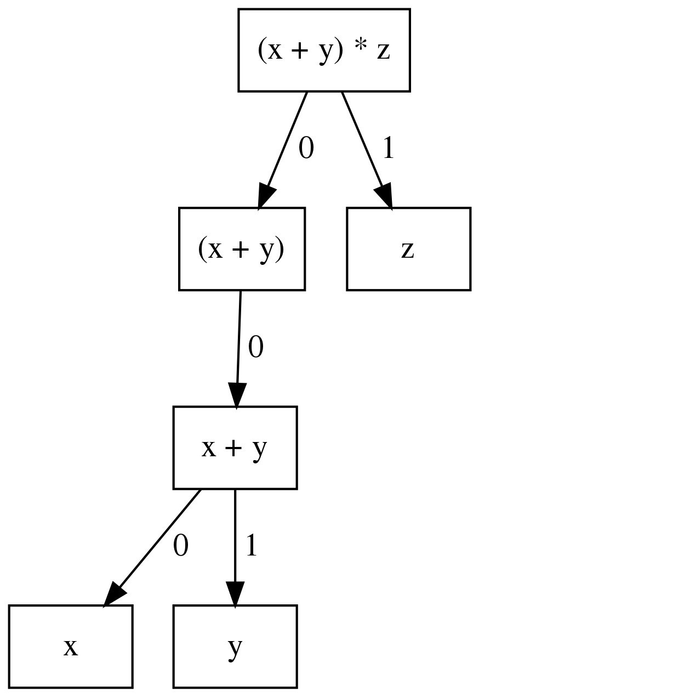
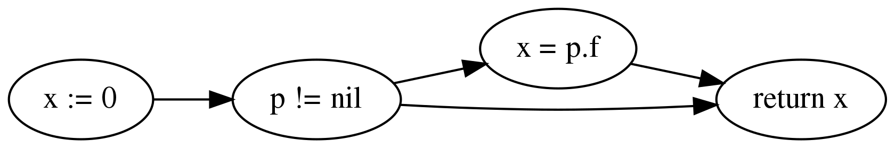
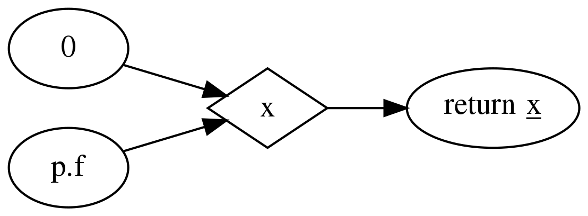
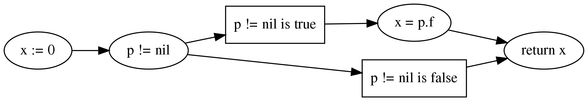

CodeQL library for Go¶
When you’re analyzing a Go program, you can make use of the large collection of classes in the CodeQL library for Go.
Overview¶
CodeQL ships with an extensive library for analyzing Go code. The classes in this library present the data from a CodeQL database in an object-oriented form and provide abstractions and predicates to help you with common analysis tasks.
The library is implemented as a set of QL modules, that is, files with the extension .qll. The
module go.qll imports most other standard library modules, so you can include the complete
library by beginning your query with:
import go
Broadly speaking, the CodeQL library for Go provides two views of a Go code base: at the syntactic level, source code is represented as an abstract syntax tree (AST), while at the data-flow level it is represented as a data-flow graph (DFG). In between, there is also an intermediate representation of the program as a control-flow graph (CFG), though this representation is rarely useful on its own and mostly used to construct the higher-level DFG representation.
The AST representation captures the syntactic structure of the program. You can use it to reason about syntactic properties such as the nesting of statements within each other, but also about the types of expressions and which variable a name refers to.
The DFG, on the other hand, provides an approximation of how data flows through variables and operations at runtime. It is used, for example, by the security queries to model the way user-controlled input can propagate through the program. Additionally, the DFG contains information about which function may be invoked by a given call (taking virtual dispatch through interfaces into account), as well as control-flow information about the order in which different operations may be executed at runtime.
As a rule of thumb, you normally want to use the AST only for superficial syntactic queries. Any analysis involving deeper semantic properties of the program should be done on the DFG.
The rest of this tutorial briefly summarizes the most important classes and predicates provided by this library, including references to the detailed API documentation where applicable. We start by giving an overview of the AST representation, followed by an explanation of names and entities, which are used to represent name-binding information, and of types and type information. Then we move on to control flow and the data-flow graph, and finally the call graph and a few advanced topics.
Abstract syntax¶
The AST presents the program as a hierarchical structure of nodes, each of which corresponds to a syntactic element of the program source text. For example, there is an AST node for each expression and each statement in the program. These AST nodes are arranged into a parent-child relationship reflecting the nesting of syntactic elements and the order in which inner elements appear in enclosing ones.
For example, this is the AST for the expression (x + y) * z:

It is composed of six AST nodes, representing x, y, x + y, (x + y), z and the
entire expression (x + y) * z, respectively. The AST nodes representing x and y are
children of the AST node representing x + y, x being the zeroth child and y being the
first child, reflecting their order in the program text. Similarly, x + y is the only child of
(x + y), which is the zeroth child of (x + y) * z, whose first child is z.
All AST nodes belong to class AstNode, which defines generic tree traversal predicates:
getChild(i): returns theith child of this AST node.getAChild(): returns any child of this AST node.getParent(): returns the parent node of this AST node, if any.
These predicates should only be used to perform generic AST traversal. To access children of specific AST node types, the specialized predicates introduced below should be used instead. In particular, queries should not rely on the numeric indices of child nodes relative to their parent nodes: these are considered an implementation detail that may change between versions of the library.
The predicate toString() in class AstNode nodes gives a short description of the AST node,
usually just indicating what kind of node it is. The toString() predicate does not provide
access to the source text corresponding to an AST node. The source text is not stored in the
dataset, and hence is not directly accessible to CodeQL queries.
The predicate getLocation() in class AstNode returns a Location entity
describing the source location of the program element represented by the AST node. You can use its
member predicates getFile(), getStartLine(), getStartColumn, getEndLine(), and
getEndColumn() to obtain information about its file, start line and column, and end line and
column.
The most important subclasses of AstNode are Stmt and Expr, which represent statements and expressions, respectively. This section briefly discusses some of their more important subclasses and predicates. For a full reference of all the subclasses of Stmt and Expr, see Abstract syntax tree classes for Go.
Statements¶
ExprStmt: an expression statement; usegetExpr()to access the expression itselfAssignment: an assignment statement; usegetLhs(i)to access theith left-hand side andgetRhs(i)to access theith right-hand side; if there is only a single left-hand side you can usegetLhs()instead, and similar for the right-hand sideSimpleAssignStmt: an assignment statement that does not involve a compound operatorAssignStmt: a plain assignment statement of the formlhs = rhsDefineStmt: a short-hand variable declaration of the formlhs := rhs
CompoundAssignStmt: an assignment statement with a compound operator, such aslhs += rhs
IncStmt,DecStmt: an increment statement or a decrement statement, respectively; usegetOperand()to access the expression being incremented or decrementedBlockStmt: a block of statements between curly braces; usegetStmt(i)to access theith statement in a blockIfStmt: anifstatement; usegetInit(),getCond(),getThen(), andgetElse()to access the (optional) init statement, the condition being checked, the “then” branch to evaluate if the condition is true, and the (optional) “else” branch to evaluate otherwise, respectivelyLoopStmt: a loop; usegetBody()to access its bodyForStmt: aforstatement; usegetInit(),getCond(), andgetPost()to access the init statement, loop condition, and post statement, respectively, all of which are optionalRangeStmt: arangestatement; usegetDomain()to access the iteration domain, andgetKey()andgetValue()to access the expressions to which successive keys and values are assigned, if any
GoStmt: agostatement; usegetCall()to access the call expression that is evaluated in the new goroutineDeferStmt: adeferstatement; usegetCall()to access the call expression being deferredSendStmt: a send statement; usegetChannel()andgetValue()to access the channel and the value being sent over the channel, respectivelyReturnStmt: areturnstatement; usegetExpr(i)to access theith returned expression; if there is only a single returned expression you can usegetExpr()insteadBranchStmt: a statement that interrupts structured control flow; usegetLabel()to get the optional target labelBreakStmt: abreakstatementContinueStmt: acontinuestatementFallthroughStmt: afallthroughstatement at the end of a switch caseGotoStmt: agotostatement
DeclStmt: a declaration statement, usegetDecl()to access the declaration in this statement; note that one rarely needs to deal with declaration statements directly, since reasoning about the entities they declare is usually easierSwitchStmt: aswitchstatement; usegetInit()to access the (optional) init statement, andgetCase(i)to access theithcaseordefaultclauseExpressionSwitchStmt: aswitchstatement examining the value of an expressionTypeSwitchStmt: aswitchstatement examining the type of an expression
CaseClause: acaseordefaultclause in aswitchstatement; usegetExpr(i)to access theith expression, andgetStmt(i)to access theith statement in the body of this clauseSelectStmt: aselectstatement; usegetCommClause(i)to access theithcaseordefaultclauseCommClause: acaseordefaultclause in aselectstatement; usegetComm()to access the send/receive statement of this clause (not defined fordefaultclauses), andgetStmt(i)to access theith statement in the body of this clauseRecvStmt: a receive statement in acaseclause of aselectstatement; usegetLhs(i)to access theith left-hand side of this statement, andgetExpr()to access the underlying receive expression
Expressions¶
Class Expression has a predicate isConst() that holds if the expression is a compile-time
constant. For such constant expressions, getNumericValue() and getStringValue() can be used
to determine their numeric value and string value, respectively. Note that these predicates are not
defined for expressions whose value cannot be determined at compile time. Also note that the result
type of getNumericValue() is the QL type float. If an expression has a numeric value that
cannot be represented as a QL float, this predicate is also not defined. In such cases, you can
use getExactValue() to obtain a string representation of the value of the constant.
Ident: an identifier; usegetName()to access its nameSelectorExpr: a selector of the formbase.sel; usegetBase()to access the part before the dot, andgetSelector()for the identifier after the dotBasicLit: a literal of a basic type; subclassesIntLit,FloatLit,ImagLit,RuneLit, andStringLitrepresent various specific kinds of literalsFuncLit: a function literal; usegetBody()to access the body of the functionCompositeLit: a composite literal; usegetKey(i)andgetValue(i)to access theith key and theith value, respectivelyParenExpr: a parenthesized expression; usegetExpr()to access the expression between the parenthesesIndexExpr: an index expressionbase[idx]; usegetBase()andgetIndex()to accessbaseandidx, respectivelySliceExpr: a slice expressionbase[lo:hi:max]; usegetBase(),getLow(),getHigh(), andgetMax()to accessbase,lo,hi, andmax, respectively; note thatlo,hi, andmaxcan be omitted, in which case the corresponding predicates are not definedConversionExpr: a conversion expressionT(e); usegetTypeExpr()andgetOperand()to accessTande, respectivelyTypeAssertExpr: a type assertione.(T); usegetExpr()andgetTypeExpr()to accesseandT, respectivelyCallExpr: a call expressioncallee(arg0, ..., argn); usegetCalleeExpr()to accesscallee, andgetArg(i)to access theith argumentStarExpr: a star expression, which may be either a pointer-type expression or a pointer-dereference expression, depending on context; usegetBase()to access the operand of the starTypeExpr: an expression that denotes a typeOperatorExpr: an expression with a unary or binary operator; usegetOperator()to access the operatorUnaryExpr: an expression with a unary operator; usegetAnOperand()to access the operand of the operatorBinaryExpr: an expression with a binary operator; usegetLeftOperand()andgetRightOperand()to access the left and the right operand, respectivelyComparisonExpr: a binary expression that performs a comparison, including both equality tests and relational comparisonsEqualityTestExpr: an equality test, that is, either==or!=; the predicategetPolarity()has resulttruefor the former andfalsefor the latterRelationalComparisonExpr: a relational comparison; usegetLesserOperand()andgetGreaterOperand()to access the lesser and greater operand of the comparison, respectively;isStrict()holds if this is a strict comparison using<or>, as opposed to<=or>=
Names¶
While Ident and SelectorExpr are very useful classes, they are often too general: Ident
covers all identifiers in a program, including both identifiers appearing in a declaration as well
as references, and does not distinguish between names referring to packages, types, variables,
constants, functions, or statement labels. Similarly, a SelectorExpr might refer to a package, a
type, a function, or a method.
Class Name and its subclasses provide a more fine-grained mapping of this space, organized along
the two axes of structure and namespace. In terms of structure, a name can be a SimpleName,
meaning that it is a simple identifier (and hence an Ident), or it can be a QualifiedName,
meaning that it is a qualified identifier (and hence a SelectorExpr). In terms of namespacing, a
Name can be a PackageName, TypeName, ValueName, or LabelName. A ValueName,
in turn, can be either a ConstantName, a VariableName, or a FunctionName, depending on
what sort of entity the name refers to.
A related abstraction is provided by class ReferenceExpr: a reference expression is an
expression that refers to a variable, a constant, a function, a field, or an element of an array or
a slice. Use predicates isLvalue() and isRvalue() to determine whether a reference
expression appears in a syntactic context where it is assigned to or read from, respectively.
Finally, ValueExpr generalizes ReferenceExpr to include all other kinds of expressions that
can be evaluated to a value (as opposed to expressions that refer to a package, a type, or a
statement label).
Functions¶
At the syntactic level, functions appear in two forms: in function declarations (represented by
class FuncDecl) and as function literals (represented by class FuncLit). Since it is often
convenient to reason about functions of either kind, these two classes share a common superclass
FuncDef, which defines a few useful member predicates:
getBody()provides access to the function bodygetName()gets the function name; it is undefined for function literals, which do not have a namegetParameter(i)gets theith parameter of the functiongetResultVar(i)gets theith result variable of the function; if there is only one result,getResultVar()can be used to access itgetACall()gets a data-flow node (see below) representing a call to this function
Entities and name binding¶
Not all elements of a code base can be represented as AST nodes. For example, functions defined in
the standard library or in a dependency do not have a source-level definition within the source code
of the program itself, and built-in functions like len do not have a definition at all. Hence
functions cannot simplify be identified with their definition, and similarly for variables, types,
and so on.
To smooth over this difference and provide a unified view of functions no matter where they are
defined, the Go library introduces the concept of an entity. An entity is a named program element,
that is, a package, a type, a constant, a variable, a field, a function, or a label. All entities
belong to class Entity, which defines a few useful predicates:
getName()gets the name of the entityhasQualifiedName(pkg, n)holds if this entity is declared in packagepkgand has namen; this predicate is only defined for types, functions, and package-level variables and constants (but not for methods or local variables)getDeclaration()connects an entity to its declaring identifier, if anygetAReference()gets aNamethat refers to this entity
Conversely, class Name defines a predicate getTarget() that gets the entity to which the
name refers.
Class Entity has several subclasses representing specific kinds of entities: PackageEntity
for packages; TypeEntity for types; ValueEntity for constants (Constant), variables
(Variable), and functions (Function); and Label for statement labels.
Class Variable, in turn, has a few subclasses representing specific kinds of variables: a
LocalVariable is a variable declared in a local scope, that is, not at package level;
ReceiverVariable, Parameter and ResultVariable describe receivers, parameters and
results, respectively, and define a predicate getFunction() to access the corresponding
function. Finally, class Field represents struct fields, and provides a member predicate
hasQualifiedName(pkg, tp, f) that holds if this field has name f and belongs to type tp
in package pkg. (Note that due to embedding the same field can belong to multiple types.)
Class Function has a subclass Method representing methods (including both interface methods
and methods defined on a named type). Similar to Field, Method provides a member predicate
hasQualifiedName(pkg, tp, m) that holds if this method has name m and belongs to type tp
in package pkg. Predicate implements(m2) holds if this method implements method m2, that
is, it has the same name and signature as m2 and it belongs to a type that implements the
interface to which m2 belongs. For any function, getACall() provides access to call sites
that may call this function, possibly through virtual dispatch.
Finally, module Builtin provides a convenient way of looking up the entities corresponding to
built-in functions and types. For example, Builtin::len() is the entity representing the
built-in function len, Builtin::bool() is the bool type, and Builtin::nil() is the
value nil.
Type information¶
Types are represented by class Type and its subclasses, such as BoolType for the built-in
type bool; NumericType for the various numeric types including IntType, Uint8Type,
Float64Type and others; StringType for the type string; NamedType, ArrayType,
SliceType, StructType, InterfaceType, PointerType, MapType, ChanType for
named types, arrays, slices, structs, interfaces, pointers, maps, and channels, respectively.
Finally, SignatureType represents function types.
Note that the type BoolType is distinct from the entity Builtin::bool(): the latter views
bool as a declared entity, the former as a type. You can, however, map from types to their
corresponding entity (if any) using the predicate getEntity().
Class Expr and class Entity both define a predicate getType() to determine the type of
an expression or entity. If the type of an expression or entity cannot be determined (for example
because some dependency could not be found during extraction), it will be associated with an invalid
type of class InvalidType.
Control flow¶
Most CodeQL query writers will rarely use the control-flow representation of a program directly, but it is nevertheless useful to understand how it works.
Unlike the abstract syntax tree, which views the program as a hierarchy of AST nodes, the control-flow graph views it as a collection of control-flow nodes, each representing a single operation performed at runtime. These nodes are connected to each other by (directed) edges representing the order in which operations are performed.
For example, consider the following code snippet:
x := 0
if p != nil {
x = p.f
}
return x
In the AST, this is represented as an IfStmt and a ReturnStmt, with the former having an
NeqExpr and a BlockStmt as its children, and so on. This provides a very detailed picture of
the syntactic structure of the code, but it does not immediately help us reason about the order
in which the various operations such as the comparison and the assignment are performed.
In the CFG, there are nodes corresponding to x := 0, p != nil, x = p.f, and return
x, as well as a few others. The edges between these nodes model the possible execution orders of
these statements and expressions, and look as follows (simplified somewhat for presentational
purposes):

For example, the edge from p != nil to x = p.f models the case where the comparison
evaluates to true and the “then” branch is evaluated, while the edge from p != nil to
return x models the case where the comparison evaluates to false and the “then” branch is
skipped.
Note, in particular, that a CFG node can have multiple outgoing edges (like from p != nil) as
well as multiple incoming edges (like into return x) to represent control-flow branching at
runtime.
Also note that only AST nodes that perform some kind of operation on values have a corresponding CFG
node. This includes expressions (such as the comparison p != nil), assignment statements (such
as x = p.f) and return statements (such as return x), but not statements that serve a purely
syntactic purpose (such as block statements) and statements whose semantics is already reflected by
the CFG edges (such as if statements).
It is important to point out that the control-flow graph provided by the CodeQL libraries for Go only models local control flow, that is, flow within a single function. Flow from function calls to the function they invoke, for example, is not represented by control-flow edges.
In CodeQL, control-flow nodes are represented by class ControlFlow::Node, and the edges between
nodes are captured by the member predicates getASuccessor() and getAPredecessor() of
ControlFlow::Node. In addition to control-flow nodes representing runtime operations, each
function also has a synthetic entry node and an exit node, representing the start and end of an
execution of the function, respectively. These exist to ensure that the control-flow graph
corresponding to a function has a unique entry node and a unique exit node, which is required for
many standard control-flow analysis algorithms.
Data flow¶
At the data-flow level, the program is thought of as a collection of data-flow nodes. These nodes are connected to each other by (directed) edges representing the way data flows through the program at runtime.
For example, there are data-flow nodes corresponding to expressions and other data-flow nodes corresponding to variables (SSA variables, to be precise). Here is the data-flow graph corresponding to the code snippet shown above, ignoring SSA conversion for simplicity:

Note that unlike in the control-flow graph, the assignments x := 0 and x = p.f are not
represented as nodes. Instead, they are expressed as edges between the node representing the
right-hand side of the assignment and the node representing the variable on the left-hand side. For
any subsequent uses of that variable, there is a data-flow edge from the variable to that use, so by
following the edges in the data-flow graph we can trace the flow of values through variables at
runtime.
It is important to point out that the data-flow graph provided by the CodeQL libraries for Go only models local flow, that is, flow within a single function. Flow from arguments in a function call to the corresponding function parameters, for example, is not represented by data-flow edges.
In CodeQL, data-flow nodes are represented by class DataFlow::Node, and the edges between nodes
are captured by the predicate DataFlow::localFlowStep. The predicate DataFlow::localFlow
generalizes this from a single flow step to zero or more flow steps.
Most expressions have a corresponding data-flow node; exceptions include type expressions, statement
labels and other expressions that do not have a value, as well as short-circuiting operators. To map
from the AST node of an expression to the corresponding DFG node, use DataFlow::exprNode. Note
that the AST node and the DFG node are different entities and cannot be used interchangeably.
There is also a predicate asExpr() on DataFlow::Node that allows you to recover the
expression underlying a DFG node. However, this predicate should be used with caution, since many
data-flow nodes do not correspond to an expression, and so this predicate will not be defined for
them.
Similar to Expr, DataFlow::Node has a member predicate getType() to determine the type
of a node, as well as predicates getNumericValue(), getStringValue(), and
getExactValue() to retrieve the value of a node if it is constant.
Important subclasses of DataFlow::Node include:
DataFlow::CallNode: a function call or method call; usegetArgument(i)andgetResult(i)to obtain the data-flow nodes corresponding to theith argument and theith result of this call, respectively; if there is only a single result,getResult()will return itDataFlow::ParameterNode: a parameter of a function; useasParameter()to access the corresponding AST nodeDataFlow::BinaryOperationNode: an operation involving a binary operator; eachBinaryExprhas a correspondingBinaryOperationNode, but there are also binary operations that are not explicit at the AST level, such as those arising from compound assignments and increment/decrement statements; at the AST level,x + 1,x += 1, andx++are represented by different kinds of AST nodes, while at the DFG level they are all modeled as a binary operation node with operandsxand1DataFlow::UnaryOperationNode: analogous, but for unary operators
DataFlow::PointerDereferenceNode: a pointer dereference, either explicit in an expression of the form*p, or implicit in a field or method reference through a pointerDataFlow::AddressOperationNode: analogous, but for taking the address of an entityDataFlow::RelationalComparisonNode,DataFlow::EqualityTestNode: data-flow nodes corresponding toRelationalComparisonExprandEqualityTestExprAST nodes
Finally, classes Read and Write represent, respectively, a read or a write of a variable, a
field, or an element of an array, a slice or a map. Use their member predicates readsVariable,
writesVariable, readsField, writesField, readsElement, and writesElement to
determine what the read/write refers to.
Call graph¶
The call graph connects function (and method) calls to the functions they invoke. Call graph
information is made available by two member predicates on DataFlow::CallNode: getTarget()
returns the declared target of a call, while getACallee() returns all possible actual functions
a call may invoke at runtime.
These two predicates differ in how they handle calls to interface methods: while getTarget()
will return the interface method itself, getACallee() will return all concrete methods that
implement the interface method.
Global data flow and taint tracking¶
The predicates DataFlow::localFlowStep and DataFlow::localFlow are useful for reasoning
about the flow of values in a single function. However, more advanced use cases, particularly in
security analysis, will invariably require reasoning about global data flow, including flow into,
out of, and across function calls, and through fields.
In CodeQL, such reasoning is expressed in terms of data-flow configurations. A data-flow configuration has three ingredients: sources, sinks, and barriers (also called sanitizers), all of which are sets of data-flow nodes. Given these three sets, CodeQL provides a general mechanism for finding paths from a source to a sink, possibly going into and out of functions and fields, but never flowing through a barrier.
To define a data-flow configuration, you can define a subclass of DataFlow::Configuration,
overriding the member predicates isSource, isSink, and isBarrier to define the sets of
sources, sinks, and barriers.
Going beyond pure data flow, many security analyses need to perform more general taint tracking,
which also considers flow through value-transforming operations such as string operations. To track
taint, you can define a subclass of TaintTracking::Configuration, which works similar to
data-flow configurations.
A detailed exposition of global data flow and taint tracking is out of scope for this brief introduction. For a general overview of data flow and taint tracking, see “About data flow analysis.”
Advanced libraries¶
Finally, we briefly describe a few concepts and libraries that are useful for advanced query writers.
Basic blocks and dominance¶
Many important control-flow analyses organize control-flow nodes into basic blocks, which are maximal straight-line sequences of
control-flow nodes without any branching. In the CodeQL libraries, basic blocks are represented by
class BasicBlock. Each control-flow node belongs to a basic block. You can use the predicate
getBasicBlock() in class ControlFlow::Node and the predicate getNode(i) in
BasicBlock to move from one to the other.
Dominance is a standard concept in control-flow analysis: a basic block dom is said to
dominate a basic block bb if any path through the control-flow graph from the entry node to
the first node of bb must pass through dom. In other words, whenever program execution
reaches the beginning of bb, it must have come through dom. Each basic block is moreover
considered to dominate itself.
Dually, a basic block postdom is said to post-dominate a basic block bb if any path
through the control-flow graph from the last node of bb to the exit node must pass through
postdom. In other words, after program execution leaves bb, it must eventually reach
postdom.
These two concepts are captured by two member predicates dominates and postDominates of class
BasicBlock.
Condition guard nodes¶
A condition guard node is a synthetic control-flow node that records the fact that at some point in the control-flow graph the truth value of a condition is known. For example, consider again the code snippet we saw above:
x := 0
if p != nil {
x = p.f
}
return x
At the beginning of the “then” branch p is known not be nil. This knowledge is encoded in
the control-flow graph by a condition guard node preceding the assignment to x, recording the
fact that p != nil is true at this point:

A typical use of this information would be in an analysis that looks for nil dereferences: such
an analysis would be able to conclude that the field read p.f is safe because it is immediately
preceded by a condition guard node guaranteeing that p is not nil.
In CodeQL, condition guard nodes are represented by class ControlFlow::ConditionGuardNode which
offers a variety of member predicates to reason about which conditions a guard node guarantees.
Static single-assignment form¶
Static single-assignment form (SSA form for short) is a program representation in which the original program variables are mapped onto more fine-grained SSA variables. Each SSA variable has exactly one definition, so program variables with multiple assignments correspond to multiple SSA variables.
Most of the time query authors do not have to deal with SSA form directly. The data-flow graph uses it under the hood, and so most of the benefits derived from SSA can be gained by simply using the data-flow graph.
For example, the data-flow graph for our running example actually looks more like this:

Note that the program variable x has been mapped onto three distinct SSA variables x1,
x2, and x3. In this case there is not much benefit to such a representation, but in general
SSA form has well-known advantages for data-flow analysis for which we refer to the literature.
If you do need to work with raw SSA variables, they are represented by the class SsaVariable.
Class SsaDefinition represents definitions of SSA variables, which have a one-to-one
correspondence with SsaVariables. Member predicates getDefinition() and getVariable()
exist to map from one to the other. You can use member predicate getAUse() of SsaVariable to
look for uses of an SSA variable. To access the program variable underlying an SSA variable, use
member predicate getSourceVariable().
Global value numbering¶
Global value numbering is a technique for determining when two computations in a program are guaranteed to yield the same result. This is done by associating with each data-flow node an abstract representation of its value (conventionally called a value number, even though in practice it is not usually a number) such that identical computations are represented by identical value numbers.
Since this is an undecidable problem, global value numbering is conservative in the sense that if two data-flow nodes have the same value number they are guaranteed to have the same value at runtime, but not conversely. (That is, there may be data-flow nodes that do, in fact, always evaluate to the same value, but their value numbers are different.)
In the CodeQL libraries for Go, you can use the globalValueNumber(nd) predicate to compute the
global value number for a data-flow node nd. Value numbers are represented as an opaque QL type
GVN that provides very little information. Usually, all you need to do with global value numbers
is to compare them to each other to determine whether two data-flow nodes have the same value.